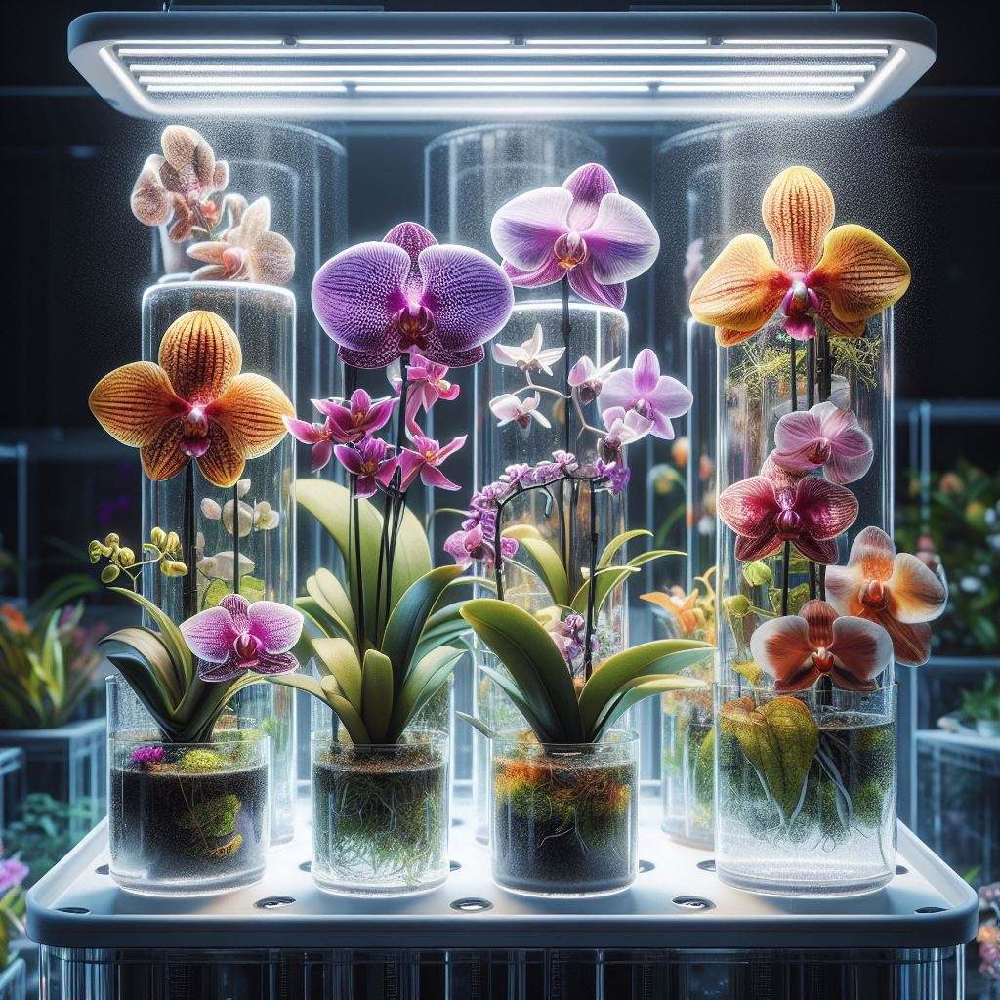

Anggrek Hidroponik
Alat dan Bahan
- Pot atau Wadah Khusus Hidroponik.
- Nutrisi Hidroponik Khusus Tanaman Berbunga.
- Media Tanam (serat kelapa, batu apung).
- Benih atau Bibit Tanaman
Langkah Budidaya
- Pilih pot atau wadah khusus hidroponik untuk tanaman berbunga seperti mawar atau anggrek.
- Isi pot dengan media tanam yang sesuai, seperti serat kelapa atau batu apung.
- Tanam benih atau bibit mawar atau anggrek dengan hati-hati.
- Berikan nutrisi hidroponik yang dirancang khusus untuk tanaman berbunga.
- Monitor dan pastikan kelembaban media tanam tetap optimal.
- Pantau pertumbuhan tanaman dan lakukan perawatan sesuai kebutuhan.